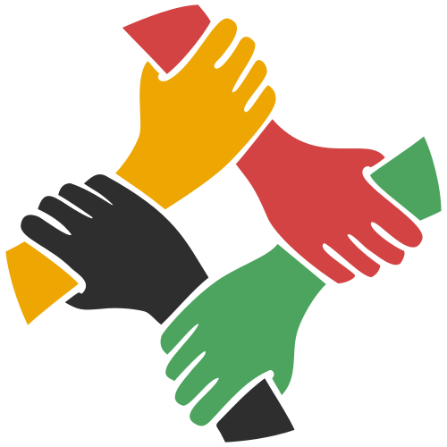

<div class="layout-topbar">
    <a class="layout-topbar-logo" routerLink="/">
        
        <span>Wallo Coop</span>
    </a>

    <div #topbarmenu class="layout-topbar-menu" >
        <div *ngIf="!coopIsConnected && !userIsConnected">
            Connectez-vous:&nbsp;
            <a routerLink="/login/coop" class="my-top-right-button mr-2">
                <i class="pi pi-sign-in"></i>&nbsp;Coopérative
            </a>
            <a routerLink="/login/user" class="my-top-right-button">
                <i class="pi pi-sign-in"></i>&nbsp;Participant
            </a>
        </div>
        <div *ngIf="coopIsConnected">
            <a [routerLink]="'/profile/coop/'+connectedCoopId" class="my-top-right-button my-blue mr-2">
                <i class="pi pi-eye"></i>&nbsp;Voir Profil
            </a>
            <a (click)="coopLogout()" class="my-top-right-button my-red">
                <i class="pi pi-sign-out"></i>&nbsp;Déconnection
            </a>
        </div>
        <div *ngIf="userIsConnected">
            <a [routerLink]="'/profile/user/'+connectedUserId" class="my-top-right-button my-blue mr-2">
                <i class="pi pi-eye"></i>&nbsp;Voir Profil
            </a>
            <a (click)="userLogout()" class="my-top-right-button my-red">
                <i class="pi pi-sign-out"></i>&nbsp;Déconnection
            </a>
        </div>
    </div>
</div>
